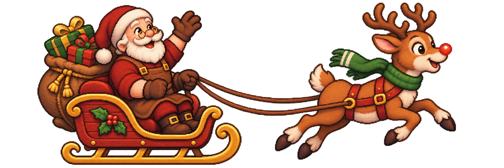
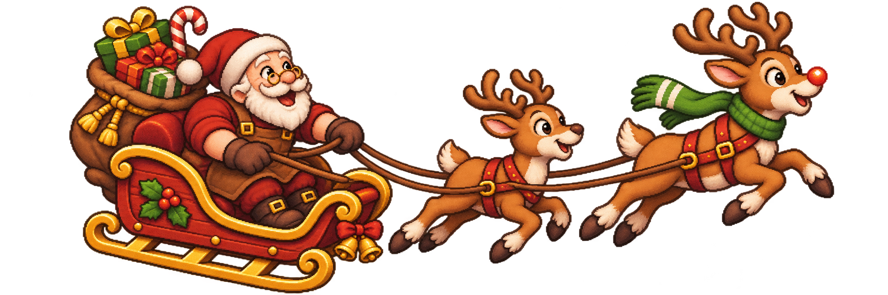
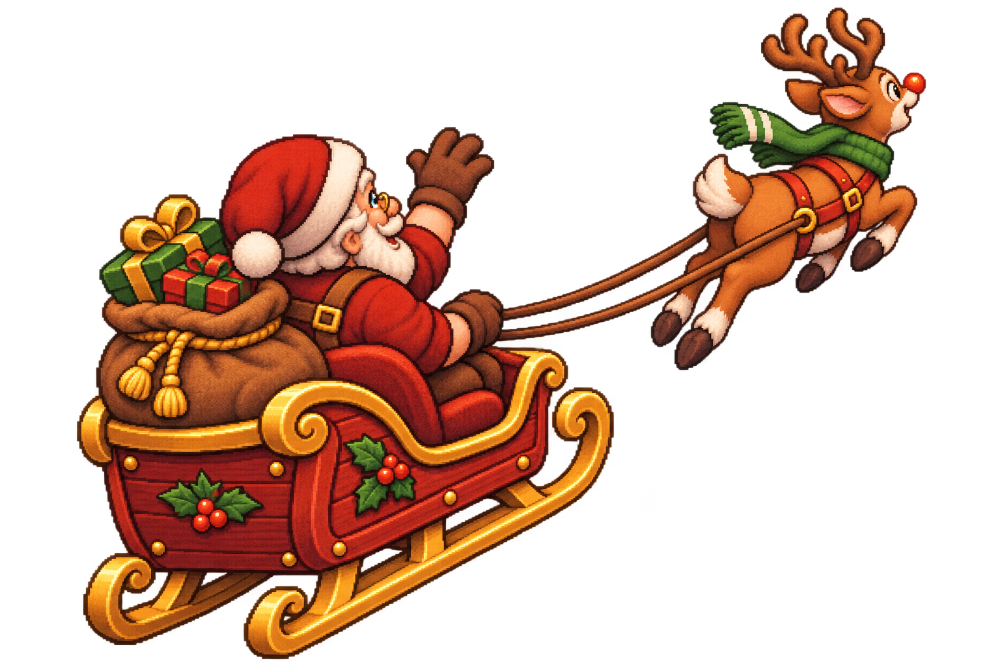

SELECTED CONCEPT D / SANTA’S CHRISTMAS DEPARTURE
완성한 빛을 싣고,
선물을 전하러.
마지막 장식 → 별에 모인 빛 → 빛의 물결 → 산타 마을.
선택한 D안의 흐름에 출발 인사와 실제 산타·루돌프 썰매를 더했습니다. 세 가지 모습과 비행을 비교해 주세요.
처음 네 가지 연출로 돌아가기 ↗


약 4.4초부터 마을 위로 날아갑니다. 시간 막대를 움직여 그림·궤적·마무리 문구를 비교해 보세요. 동작 줄이기에서는 썰매가 있는 완성 장면을 표시합니다.
YOUR DEPARTURE
어떤 출발을 함께할까요?
마음에 드는 썰매와 비행을 선택해 주세요. 그림과 궤적을 서로 조합해도 좋습니다.